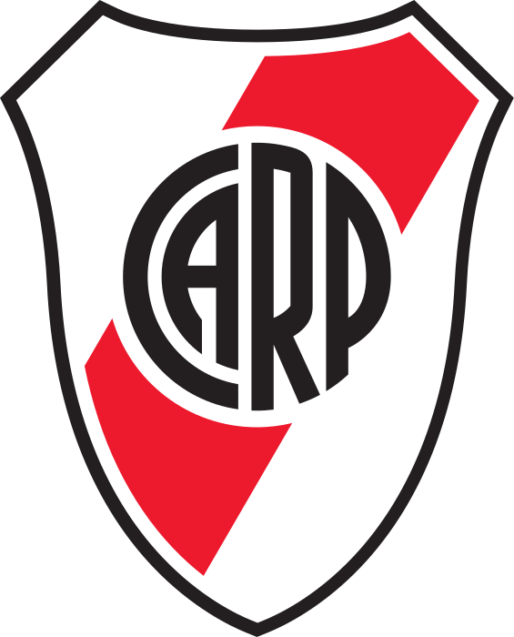

El Club Atlético River Plate es el club mas grande Argentina. Fue fundado en el año 1901.
En esta página voy a mostrar algunos datos sobre la historia de River Plate.
Una página sobre el mas grande de argentina

El Club Atlético River Plate es el club mas grande Argentina. Fue fundado en el año 1901.
En esta página voy a mostrar algunos datos sobre la historia de River Plate.